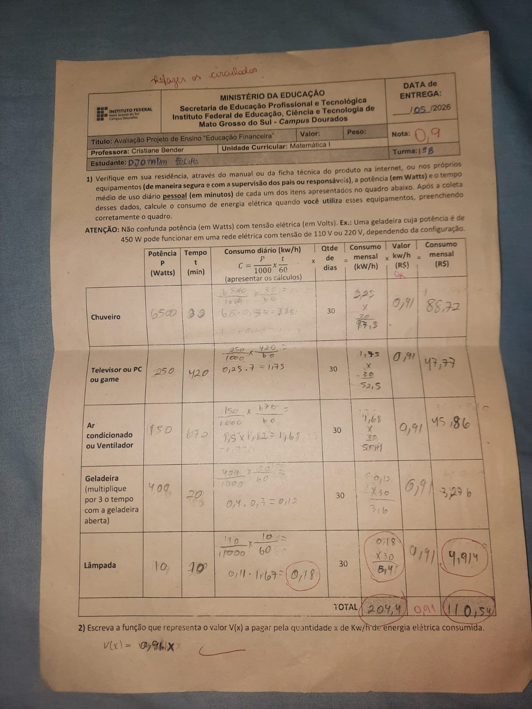
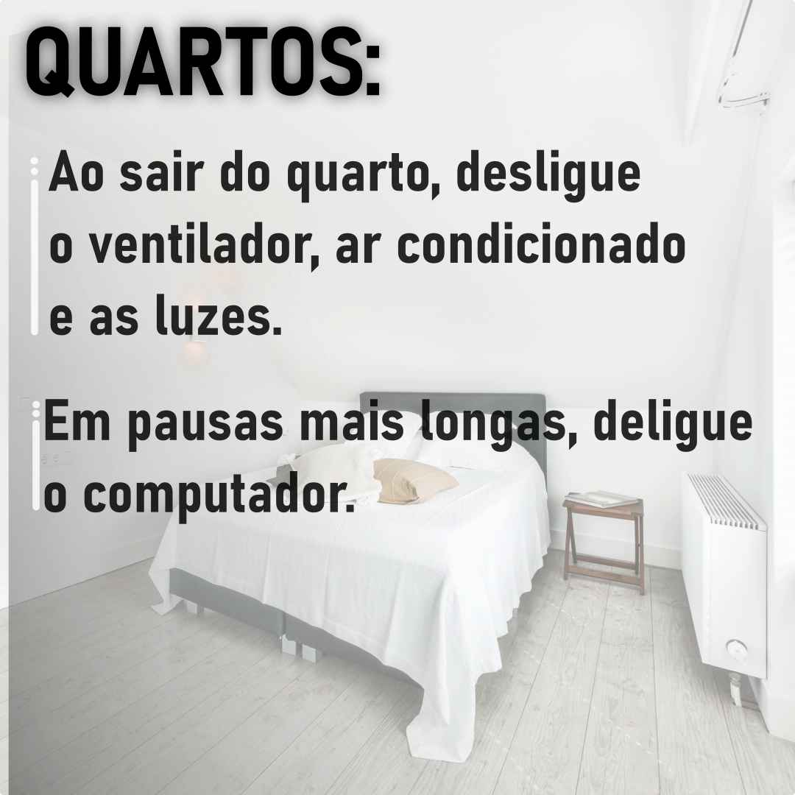

A imagem abaixo mostra a atividade de Matemática sobre o consumo de energia elétrica.

Nesta atividade aprendemos a calcular o consumo de energia dos aparelhos da casa. Com esses cálculos foi possível entender quais aparelhos gastam mais energia e como podemos economizar dinheiro diminuindo o consumo.
A educação financeira é importante porque ajuda as pessoas a organizar melhor os gastos e cuidar do dinheiro da família.
Imagem produzida na disciplina de Ferramentas de Desenho.
